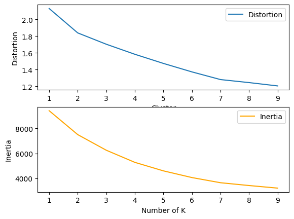
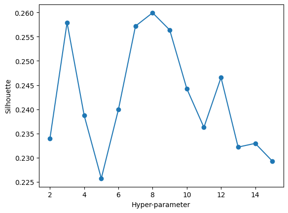
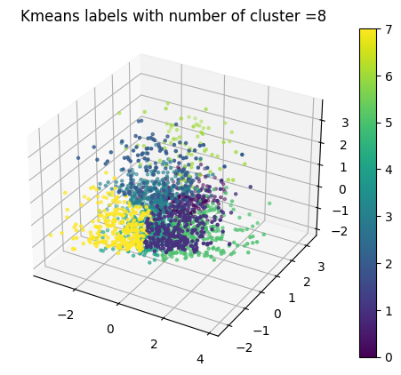
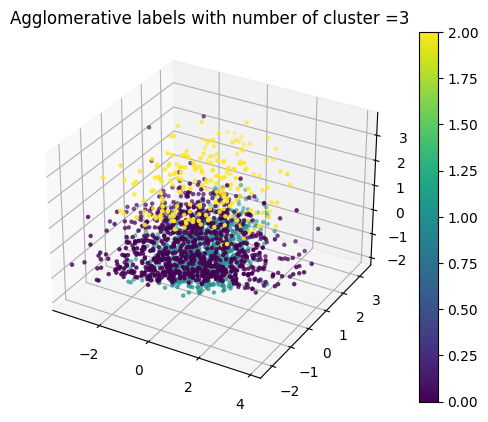
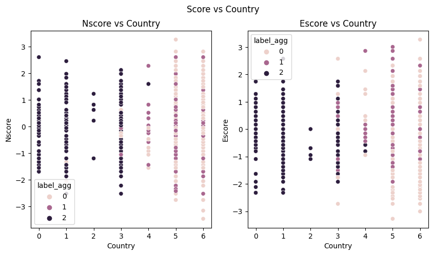
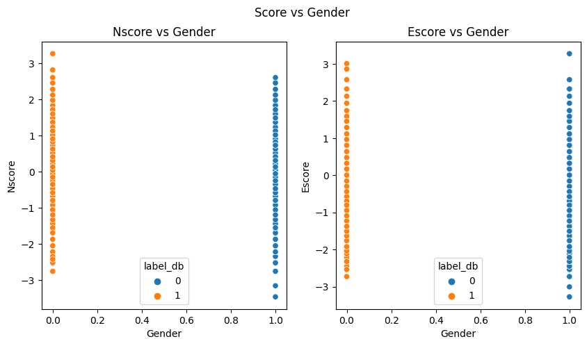

from sklearn.cluster import KMeans, AgglomerativeClustering, DBSCANimport pandas as pdimport numpy as npimport matplotlib.pyplot as pltimport seaborn as snsfrom sklearn.preprocessing import StandardScalerfrom sklearn.cluster import KMeansfrom scipy.spatial.distance import cdistimport warningswarnings.filterwarnings('ignore')
Introduction to Un-supervised learning – Clustering
Unsupervised learning, also known as unsupervised machine learning, uses machine learning algorithms to analyze and cluster unlabeled datasets. These algorithms discover hidden patterns or data groupings without the need for human intervention(IBM). It is the good option for exploratory data analysis, cross-selling tactics, consumer segmentation, and picture identification because of its capacity to find similarities and differences in information.
In this section, we will focus on 3 different clustering methods to do the clustering analysis. The data set can be found on My Github called Drug_Consumption.csv and can be download here. The dataset has 1884 rows and 32 columns and each row represents the information about a participant. We will use the 6 columns (‘Age’,‘Gender’,‘Nscore’,‘Escore’,‘Cannabis’,‘Country’) and 1884 rows for the clustering analysis.
Attribute Information Age is age of a participant has one value from the list {‘55-64’, ‘18-24’, ‘45-54’, ‘25-34’, ‘65+’, ‘35-44’} Gender is gender of participant: Female or Male Country is country of current residence of participant has one value from the list {‘USA’, ‘Republic of Ireland’, ‘New Zealand’, ‘UK’, ‘Canada’, ‘Other’, ‘Australia’} Nscore is NEO-FFI-R Neuroticism and is a numerical value. People who score high in neuroticism are very emotionally reactive. Escore is NEO-FFI-R Extraversion and is a numerical value. Extraversion indicates how outgoing and social a person is. Cannabis is class of cannabis consumption. It is output attribute with following distribution of classes. {‘CL0’, ‘CL1’, ‘CL2’, ‘CL3’, ‘CL4’, ‘CL5’, ‘CL6’} where CL0 represents Never Used; CL1 represents Used over a Decade Ago; CL2 represents Used in Last Decade; CL3 represents Used in Last Year; CL4 represents Used in Last Month; CL5 represents Used in Last Week; CL6 represents Used in Last Day;
So, based on these select features, we will use all the columns except the ‘Cannabis’ to divide the data into different groups. Then compare the group labels we get from unsupervised machine learning with the ‘Cannabis’ group labels and check if the clustering predictions coincided with the ‘Cannabis’ group labels.
Data Selection
Choose the target columns which are ‘Age’, ‘Gender’, ‘Nscore’, ‘Escore’,‘Cannabis’,‘Country’
Code
#read the datasetdf=pd.read_csv("Drug_Consumption.csv")df
For example, the first row has ‘25-34’ in Age column and it will be replaced with 29.5
Code
#replace the age with their mediandf=df.replace('18-24', 21)df=df.replace('25-34', 29.5)df=df.replace('55-64', 59.5)df=df.replace('45-54', 49.5)df=df.replace('35-44', 39.5)df=df.replace('65+', 65)
Code
#show first rowsdf.head()
Age
Gender
Nscore
Escore
Cannabis
Country
0
29.5
M
-0.67825
1.93886
CL4
UK
1
39.5
M
-0.46725
0.80523
CL3
UK
2
21.0
F
-0.14882
-0.80615
CL2
UK
3
39.5
F
0.73545
-1.63340
CL3
UK
4
65.0
F
-0.67825
-0.30033
CL0
Canada
Replace the categorical values in Cannabis with category codes
K-means is a centroid-based clustering technique where each data point is assigned to a cluster based on the distance between it and a centroid. Finding the K number of groups in the dataset is the objective.
Now, we are going to use two methods called Elbow method and Silhouette method to find the ideal number of K.
Elbow method contains two measurement one is distortions and another one is inertias. Both of them measure how far the data point is from the centroid of assigned the cluster. We are going to plot distortions/inertias vs Number of Clustering, and our goal is to pick the elbow of the curve as the number of clusters to use.
Silhouette method is to calculate the Silhouette score with different number of cluster. Since, Silhouette score is used to evaluate the quality of clusters created. So, our goal for this method is to find the Number of clusters with highest Silhouette score.
distortions = []inertias = []K =range(1, 10)for k in K:# Building and fitting the model kmeanModel = KMeans(n_clusters=k).fit(X) kmeanModel.fit(X) distortions.append(sum(np.min(cdist(X, kmeanModel.cluster_centers_,'euclidean'), axis=1)) / X.shape[0]) inertias.append(kmeanModel.inertia_)elbow=pd.DataFrame({'Cluster':K,'Distortion':distortions,'Inertia':inertias})
Code
import seaborn as snsimport matplotlib.pyplot as pltfig, ax = plt.subplots(2, 1)sns.lineplot(x=elbow['Cluster'],y=elbow['Distortion'],ax=ax[0],palette ='green', label="Distortion")sns.lineplot(x=elbow['Cluster'],y=elbow['Inertia'],ax=ax[1],color='orange', label="Inertia")plt.xlabel("Number of K")plt.legend()opt_labels=maximize_silhouette(X,algo="kmeans",nmax=15, i_plot=True)
OPTIMAL PARAMETER = 8


From the two graphs above, we can see the highest Silhouette score is around 0.257 when the cluster size is 8.
Optimal K means
Code
%matplotlib inlineKmean = KMeans(n_clusters=8).fit(X)df['label_kmean']=Kmean.fit_predict(X)labels=df['label_kmean']plot(title='Kmeans labels with number of cluster ='+str(8))

DBSAN Clustering
It creates a cluster from “densely organized” data points. By examining the local density of the data points, it may locate clusters in big geographical datasets. The sensitivity to outliers of DBSCAN clustering is its most exciting characteristic. Additionally, unlike K-Means, which requires us to specify the number of centroids, it does not require us to know in advance how many clusters will be present (Sharma). Besides, the DBSAN Clustering only have two parameters epsilon and mini sample size. The epsilon represents the radius of the circle centered at the each data point and mini sample size represents the minimum number of data points required in the circle.
So, in this section, we will find the best optimal epsilon and mini sample size then apply DBSCAN clustering on the dataset and visualize the result.
fig.set_size_inches(14,8)db = DBSCAN(eps=2,min_samples=20).fit(X)df['label_db']=db.fit_predict(X)labels=df['label_db']plot(title='DBSCAN labels with number of cluster =='+str(2))
Agglomerative Clustering is also called Hierarchical clustering. It is one of the unsupervised machine learning methods that can divide the data into different groups based on the similarity of each data. So, the data in the same cluster have similar feature and data in different cluster are less similar.
The Agglomerative Clustering method only require one parameter which is number of cluster. We will find the optimal cluster size dendrogram method and visualize the optimal result
Dendrogram
Code
from scipy.cluster.hierarchy import dendrogramAgg= AgglomerativeClustering(distance_threshold=0, n_clusters=None).fit(X)def plot_dendrogram(model, **kwargs):# Create linkage matrix and then plot the dendrogram# create the counts of samples under each node counts = np.zeros(model.children_.shape[0]) n_samples =len(model.labels_)for i, merge inenumerate(model.children_): current_count =0for child_idx in merge:if child_idx < n_samples: current_count +=1# leaf nodeelse: current_count += counts[child_idx - n_samples] counts[i] = current_count linkage_matrix = np.column_stack( [model.children_, model.distances_, counts] ).astype(float)# Plot the corresponding dendrogram dendrogram(linkage_matrix, **kwargs)plot_dendrogram(Agg, truncate_mode="level")
fig.set_size_inches(14,8)Agg = AgglomerativeClustering(n_clusters=3).fit(X)df['label_agg']=Agg.fit_predict(X)labels=df['label_agg']plot(title='Agglomerative labels with number of cluster ='+str(3))

Result
Let’s plot the data based on the and put all four graphs together and compare them with the data labeled by ‘Cannabis’
From the four graphs above, we can clearly see that different methods divide the data into different size of clusters. K means has 8 clusters, dbscan only have 2 clusters and the agglomerative has 3 clusters.
All of the results don’t match the Cannabis labels in the dataset. The K means cluster has the most different cluster sizes.
Let’s visualize the data points into 2D and see what we can discover
%matplotlib inlinefig,ax= plt.subplots(1, 2,sharex=True, figsize=(10,5))fig.suptitle('Score vs Country')sns.scatterplot(data=df,x='Age',y='Nscore',hue='label_kmean',ax=ax[0])sns.scatterplot(data=df,x='Age',y='Escore',hue='label_kmean',ax=ax[1])ax[0].set_title('Nscore vs Country')ax[1].set_title('Escore vs Country')
Text(0.5, 1.0, 'Escore vs Country')
Agglomerative Clustering in 2D
Code
fig,ax= plt.subplots(1, 2,sharex=True, figsize=(10,5))fig.suptitle('Score vs Country')sns.scatterplot(data=df,x='Country',y='Nscore',hue='label_agg',ax=ax[0])sns.scatterplot(data=df,x='Country',y='Escore',hue='label_agg',ax=ax[1])ax[0].set_title('Nscore vs Country')ax[1].set_title('Escore vs Country')
Text(0.5, 1.0, 'Escore vs Country')

From the graph, we can tell that the almost all the black points are located on Country 0 to 3 and rest the points are coming from Country 3 to 6. And the range of Nscore of black points is around -2.5 to 2 and same for the Escore.
DBSCAN Clustering in 2D
Code
fig,ax= plt.subplots(1, 2,sharex=True, figsize=(10,5))fig.suptitle('Score vs Gender')sns.scatterplot(data=df,x='Gender',y='Nscore',hue='label_db',ax=ax[0])sns.scatterplot(data=df,x='Gender',y='Escore',hue='label_db',ax=ax[1])ax[0].set_title('Nscore vs Gender')ax[1].set_title('Escore vs Gender')
Text(0.5, 1.0, 'Escore vs Gender')

From above graphs, we can see the DBSCAN method divide all the data points into two groups based on their gender– Female(0) and Male(1). From the left hand side graph, we can see the more orange group sightly higher than the blue points group. Since the organ group is Gender 0 which represents female, we can tell the average Nscore of female is higher than male’s. Similarly, for the right hand side graph, we can see more orange points are concentrated on -3 to 3 and blue points are concentrated on -3 to 2.5. So, the average female Escore are higher than male’s as well.
Conclusion
Overall, different clustering methods will divide the dataset into different group based on different standard or data similarity. For example, we can clearly see the DBSCAN clustering has perfect two gender clusters and other method dont have more than two groups. So, I think it is useful to apply multiple clustering on the same dataset to find their features in different ways.
What I found in DBSCAN clustering is the average Nscore/Escore of female is higher than male’s, which shows that female are more emotionally reactive than male. From the Wikipedia, research has suggested that women express emotions more frequently than men on average. Multiple researchers have found that women cry more frequently, and for longer durations than men at similar ages. This view is completely consistent with our results .
In the end, since these three methods didnt predicts the same labels as Cannabis, I think there are might be other key features that need to be consider.
Reference
IBM Cloud Education. (n.d.). What is unsupervised learning? IBM. Retrieved November 6, 2022, from https://www.ibm.com/cloud/learn/unsupervised-learning#:~:text=Unsupervised%20learning%2C%20also%20known%20as,the%20need%20for%20human%20intervention.
Sharma, A. (2022, June 20). How does DBSCAN clustering work?: DBSCAN clustering for ML. Analytics Vidhya. Retrieved November 10, 2022, from https://www.analyticsvidhya.com/blog/2020/09/how-dbscan-clustering-works/
Wikimedia Foundation. (2022, August 20). Gender and emotional expression. Wikipedia. Retrieved November 11, 2022, from https://en.wikipedia.org/wiki/Gender_and_emotional_expression